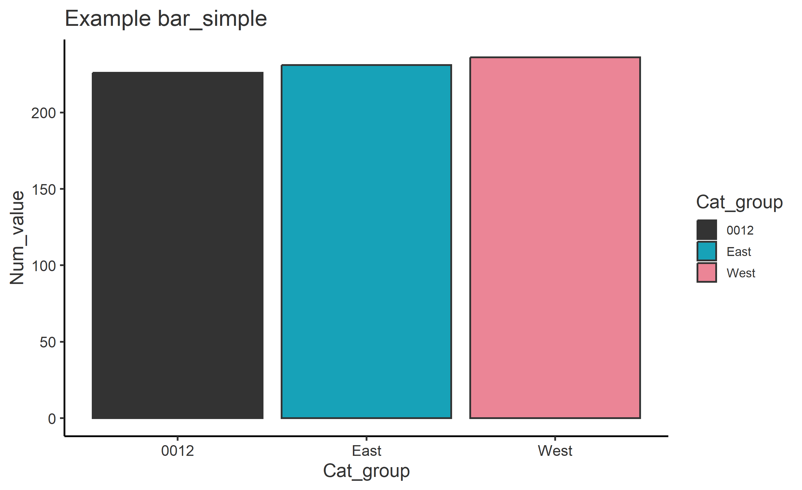

Guide 01 / 03
User guide
From CSV to a result you can explain.
Upload and review your columns, choose an analysis, and take your results into a dashboard or readable R script.
Reviewed 23 September 2026 · Column review board & readable R exports
Start with a question
Choose Documentation beside Home's two download buttons to open these guides in a new tab. Your current app session stays open in its original tab.
The General explores a CSV through tables, graphs and a dashboard of pinned views. Each row is treated as an observation: the app does not automatically deduplicate people, weight records or recognise repeated measurements.
Decide what one row represents, which population you want to include, and whether you need counts, percentages, typical values or a distribution. Use the statistics guide to choose a view.
- Upload one CSV. On Home, choose Browse. in 1 · Upload. Use the first row for column names. Save an Excel worksheet as CSV first; the current upload control accepts CSV only.
- Review the suggested columns. Open Review columns, adjust the board, then choose Confirm columns.
- Choose your rows. Select a filter column and values, or leave them blank to use all rows. Click Apply; this also unlocks Download your data.
- Explore. Choose a view in the header or sidebar, select its variables, and inspect both the plot and its table.
- Keep a result. Download a table or plot, or use Add to Dashboard on a graph. In My Dashboard, choose Preview Full Dashboard to export.
Use Download example sheet on Home for the app's starter CSV, or use the worked example below for results you can check by hand.
Review and adjust columns
The modal places and ticks suggestions in three columns. Click a card's left or right button to move it one column; untick it to leave it out. Hover over a card for its suggestion reason and example values.
| Role | Use it for | Required selection |
|---|---|---|
| Date | The date used to derive periods, such as an event or transaction date. | Exactly one ticked column. |
| Numerical | Measurements you can meaningfully average, such as a score, duration or amount. | At least one ticked column. |
| Categorical | Labels used to split or count rows: region, programme, status or category codes. | At least one ticked column. |
Suggestions are editable starting points. They assess the values, not the meaning of the column. A numeric-looking identifier can still be categorical. Leading-zero codes and yes/no values receive special handling, but unfamiliar dates, mixed formats and unusual missing-value codes still need review. Empty columns start unticked.
For a measurement such as a rating that you also want to group by, open Also use numeric columns for grouping and tick it there. This creates both numerical and categorical versions. It does not turn an identifier into a meaningful measurement.
Confirm columns applies your selection and cleaning. Cancel discards the modal's edits. Reopening restores your last confirmed selection; a new upload starts a new review. Confirming a revised mapping resets the filtered dataset, so apply your filter again.
The messy books fixture now has the intended 26 suggestions, but that is a regression example, not proof that suggestions are reliable for every dataset. Wider dataset evaluation remains planned.
What happens to your data
The app reads uploaded fields as text, then converts only the columns you confirm. Your original CSV is not rewritten. Only selected columns reach the mapped dataset; rows with no remaining usable values in any selected column are removed.
| Input | Current handling | What to check |
|---|---|---|
| Column names | Names become snake_case with a role prefix: Date_, Num_ or Cat_. “WORD COUNT” becomes Num_word_count. | Use the mapped names in analysis selectors and exported scripts. |
| Missing values | Blank text, NA, N/A, NaN, null, none, missing, unknown and -999 are treated as missing, ignoring case. | A genuine category named “Unknown” is therefore lost as a distinct category. Missing values are not zero. |
| Numbers | Currency symbols and separators are parsed using UK and European interpretations, then a heuristic chooses between them. | Inspect ambiguous values such as “1,234” or mixed decimal conventions in the mapped download. |
| Percent strings | A value containing a percent sign is divided by 100: 85% becomes 0.85. | Plain 85 stays 85. Avoid mixing proportions and percentages in one measurement. |
| Categories | Whitespace is trimmed; ordinary labels are lowercased and then title-cased. Boolean-like columns map to No/Yes. | Case distinctions can merge. Text codes such as 0012 retain leading zeros when categorical. |
| Dates | Several year-first, day-first, month-first and named-month formats are attempted. Times are reduced to dates. | Prefer ISO dates such as 2026-09-23. Ambiguous dates can be read differently from your intention; parse failures become missing. |
The suggestion board does not show a cell-by-cell cleaning preview. After confirming and clicking Apply, download the mapped data and check representative values, missingness and units before interpreting results.
Understand the time fields
The selected date creates these helper columns. They have different meanings, even when their labels look similar.
| Field | Meaning | Example |
|---|---|---|
DOTW | Day of the week, ordered Sunday to Saturday. | Monday |
Month | Month name, ordered April to March; the year is not part of the grouping. | Apr |
Financial_Quarter | Quarter within an April-start financial year; the year is not part of the grouping. | Q1 (Apr-Jun) |
Year | Calendar year from the date. | 2024 |
Financial_Year | April to the following March. | 2024-25 |
Year_Quarter | Calendar year and calendar quarter. | 2024 Q2 means April-June 2024. |
Month combines the same month across years. Filter to one financial year if that is your intended comparison. The area views use Year_Quarter, preserving chronological periods. Bar charts select the final ordered period level: March for Month or Q4 for Financial_Quarter, not the latest date observed.
Apply a filter
Home supports one filter column with several selected values. Selected values are combined with “or”. Each Apply starts from the full mapped dataset, so changing the column replaces the previous filter; filters do not accumulate across columns.
Leave the column or its values blank and click Apply to return to all mapped rows. Home Reset reloads the whole session, clearing the upload, mapping and pins; it is not just a filter-clear button.
The filter list uses validated grouping fields. Fields that are empty or almost unique can be absent from this list even when another analysis selector shows them. For several simultaneous conditions, prepare that subset before uploading or use the exported R script.
Line charts can also show an All comparison calculated from the full mapped data before the Home filter. The statistics guide explains when each comparison appears.
Find the right view
| View | Question it helps answer | Read alongside it |
|---|---|---|
| Frequencies | How many rows fall into each time/category combination? | Whether rows represent distinct cases or repeat observations. |
| Percentages · 1 / 2 Groups | How is a category distributed within each period, or within period and another group? | The counts and the row denominator. |
| Averages · 1 / 2 Groups | What are the mean, median and trimmed mean by period, optionally split by a category? | Sample size, zero handling and distribution shape. |
| Lines · 1 / 2 Groups | How does a trimmed mean vary over the selected periods? | The full-data comparison and the eligibility rules. |
| Bars · Simple / Stacked / Grouped | How do group means compare in the final ordered period? | The selected period and the fact that stacked means are not totals. |
| Areas · Stacked / Percentage | How do group means, or shares of row counts, vary by calendar quarter? | Which of those two different quantities is being stacked. |
| Scatterplots | How do two measurements vary together, within groups? | Sampling and the descriptive fitted lines. |
| Density | How do the shapes of group distributions compare in one financial year? | The pooled trimming and density scale. |
Graph pages have Plot/Table controls. Hover for plot values or the full names of shortened table headers. Table searching and sorting help inspection; they do not redefine the Home population used by the analysis. Where offered, y-axis limits change the visible range, not the data used in calculations; Auto clears those limits.
Count cells use low/medium/high colour bands at 100 and 300. These are display thresholds, not significance tests. The keyboard left/right arrows move between app tabs when you are not typing in an input; use the modal's on-screen arrows to move columns.
Build a dashboard and export
The pin button saves a graph's type, variable selections, axis settings, title and pin date. The nine graph types can be pinned; the standalone frequency, percentage and average tables currently offer CSV downloads instead.
Pins are session-local recipes, not saved data snapshots. Preview and export recalculate them against the current dataset and Home filter. Changing an upload can invalidate an old pin: remove it using the trash button and pin the new view. Refreshing or resetting the session clears pins.
| Action | Contents |
|---|---|
| Home: Download your data | The selected, cleaned columns and derived time fields for the applied Home population. |
| View: CSV / plot icons | The view's analysis table, or a PNG of its graph. Some view CSVs have a leading row-number column. |
| My Dashboard: Export PDF | A static graph page for each pin. |
| My Dashboard: Export Excel | A worksheet of analysis data for each pin. |
| My Dashboard: Export R scripts | One commented script per pin, mapped input CSVs, and RUN_SCRIPTS.txt. |
Line-chart R exports include the full comparison data. A ZIP containing lines includes dashboard_all_data.csv, even when Home is filtered. Check that file as well as the filtered CSV when deciding what to share.
Use the R scripts
- Export from the dashboard preview and extract the resulting dashboard ZIP into its own folder.
- Set R's working directory to that folder. Keep the bundled CSVs beside the scripts.
- Run an individual script with R 4.1 or later and the packages
dplyr,tidyr,readr,ggplot2andstringr. The app's restored environment already has these. - Inspect the new PNG and
_data.csv. In RStudio the script also displays the plot.
Each script has six sections: packages, settings, data preparation, analysis, plotting and saving. Change column names, paths and relevant settings at the top. The scripts use mapped data rather than reimplementing upload cleaning, and do not need Shiny or thegeneral installed.
The scatter export uses seed 42 to make its sample repeatable; the live app may draw different rows. Matching calculated values does not guarantee pixel-identical styling across exports or machines.
Try a verified example
Download example CSV Download nine R examples
This synthetic CSV has 384 rows. Map Event_Date to Date; Value, X and Y to Numerical; Group and Subgroup to Categorical. Apply the Home filter Cat_subgroup = Alpha. Then choose Cat_group and Num_value in the relevant views.
| View / selection | Expected result | Why |
|---|---|---|
| Simple bar, Month, group 0012 | Mean 226; median 36; n = 5. | March's eligible values are 16, 26, 36, 46 and 1006. |
| Grouped line, Month, group 0012, March | Trimmed mean 36; n = 5. | Remove one value from each end, then average 26, 36 and 46. |
| Percentage area, Year_Quarter | Each retained group: 33.33%; period n = 24. | Three retained groups each contribute eight rows; numeric eligibility is not applied. |
| Density, Financial_Year = 2024-25 | 100 eligible rows before trimming; 90 retained. | Pooled cutoffs are 16.95 and 1019.05, inclusive. |

The evaluation CSV records all nine exported scripts matching their dashboard calculations. The suite had 48 tests and 328 passing assertions, with no test failures or warnings. This is a recorded validation snapshot, not a guarantee for all datasets or a report of a GitHub CI run.
Resolve common problems
| Symptom | Check |
|---|---|
| Download your data is disabled | Confirm the column review, then click Apply in Filters, even if you want all rows. |
| A column is in the wrong role | Move it on the review board and confirm. Inspect the mapped CSV if its values still look wrong. |
| Confirmation is refused | Keep exactly one Date, at least one Numerical and at least one Categorical selection ticked. |
| A filter field is missing | Empty and almost-unique fields are excluded from validated grouping. Check whether the column is an identifier. |
| A bar chart is empty | Check for eligible rows in March or Q4, depending on the time selector. The current bar rule does not fall back to the latest observed date. |
| Two views give different means or counts | Compare their populations, zero/negative rules, trimming and NA/Other label exclusions in the eligibility table. |
| A density curve is missing | Check the selected financial year and whether the group has enough usable values after trimming. |
| A downloaded script cannot find data | Use the extracted export folder as the working directory, and check data_file and, for lines, reference_file. |
| An old pin fails after an upload | Remove and recreate the pin using the new mapped columns. |
For a reproducible report, record the view, mapped variable names, filter, expected result and observed result. Include a small synthetic input when possible. Developer diagnostics explains logs and environment checks.